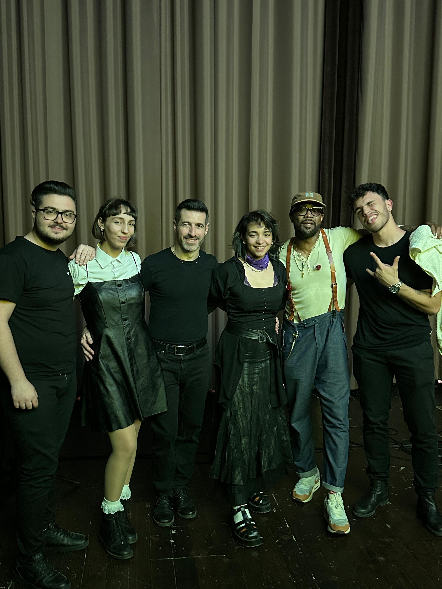
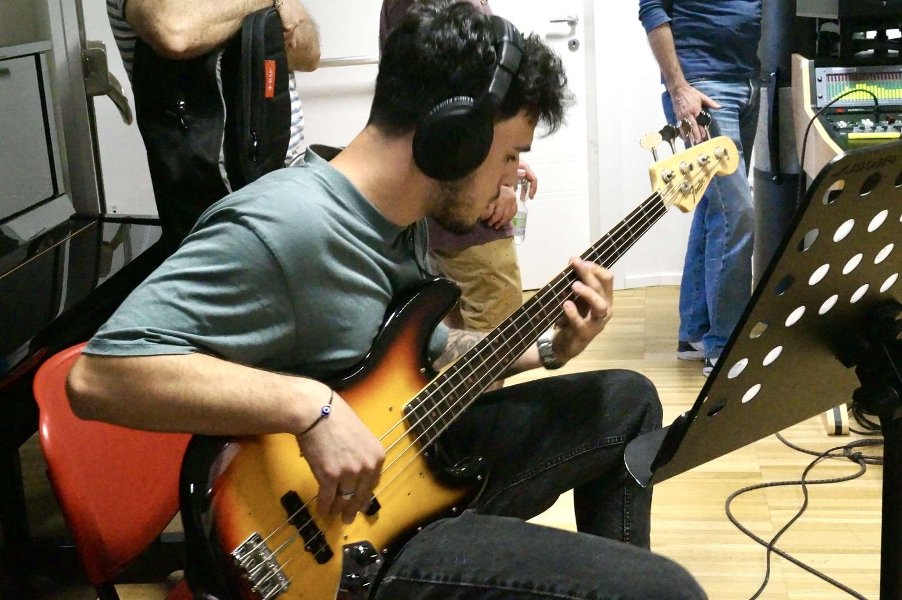
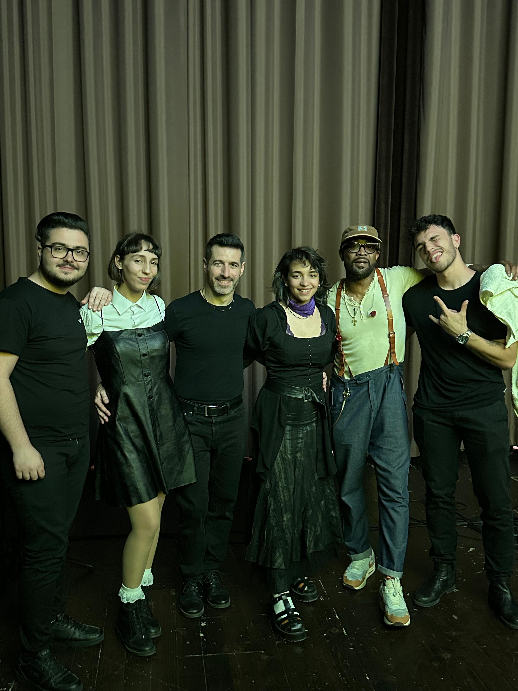
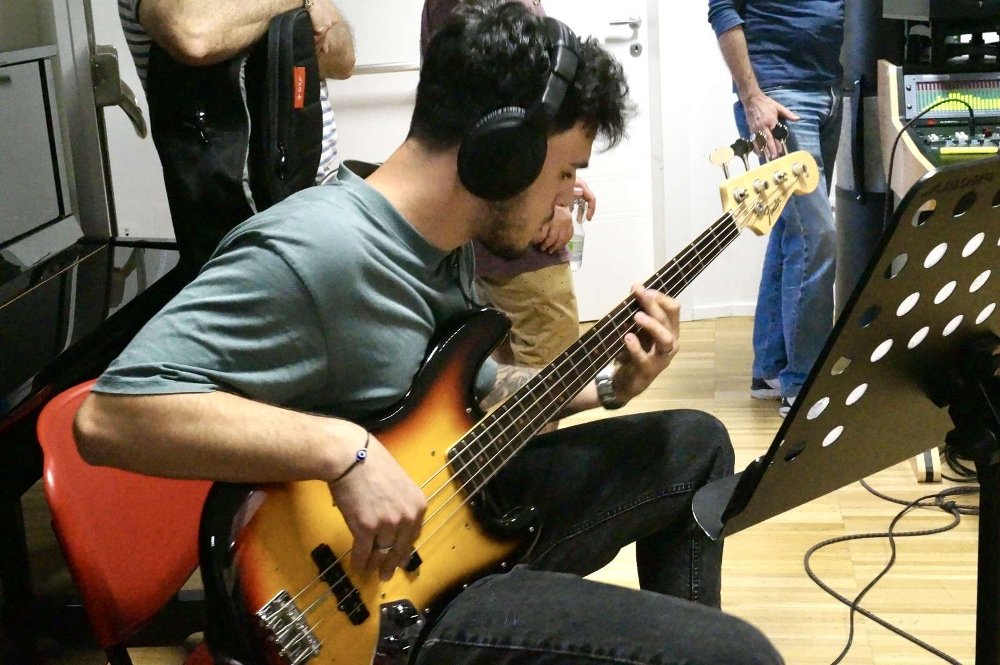
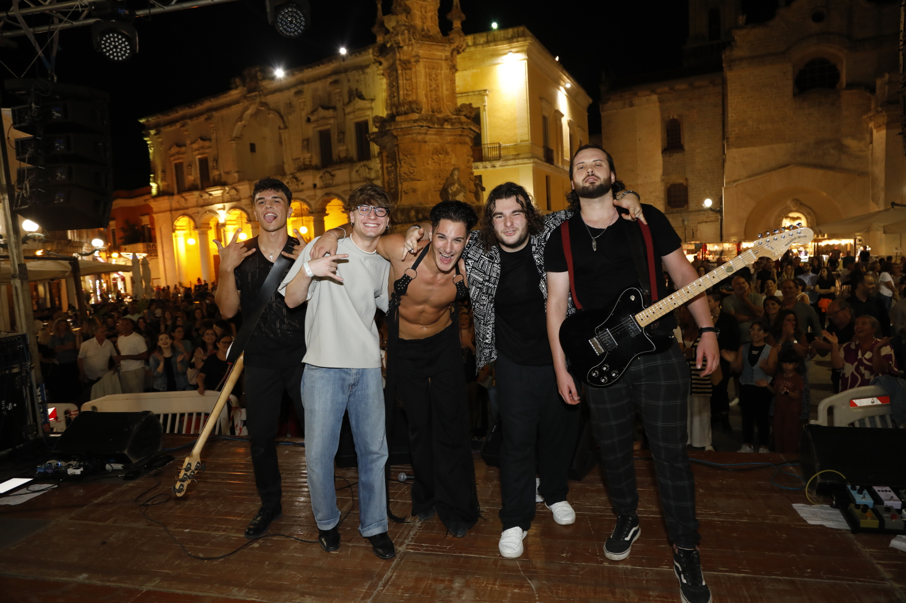
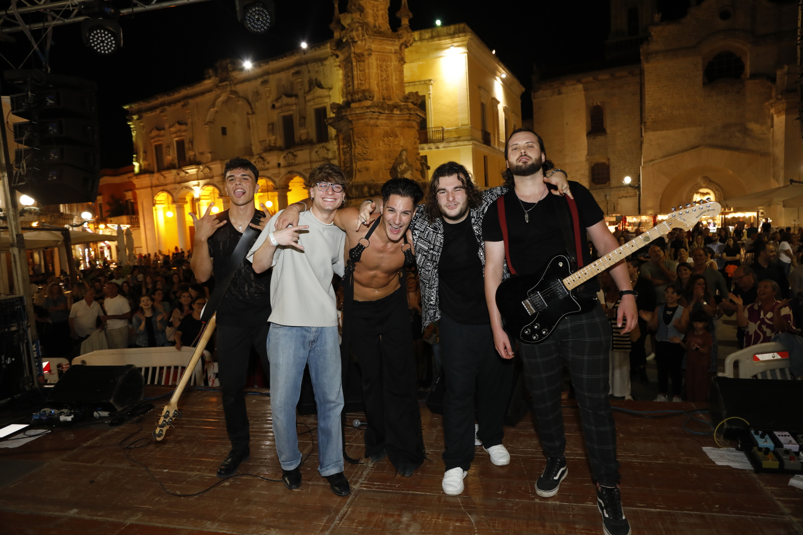
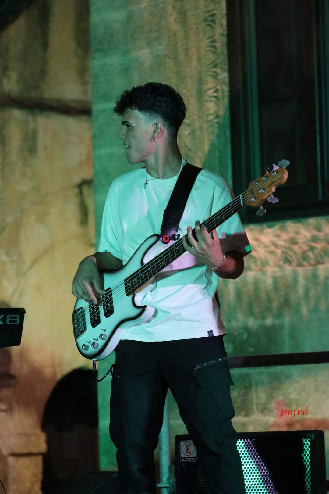
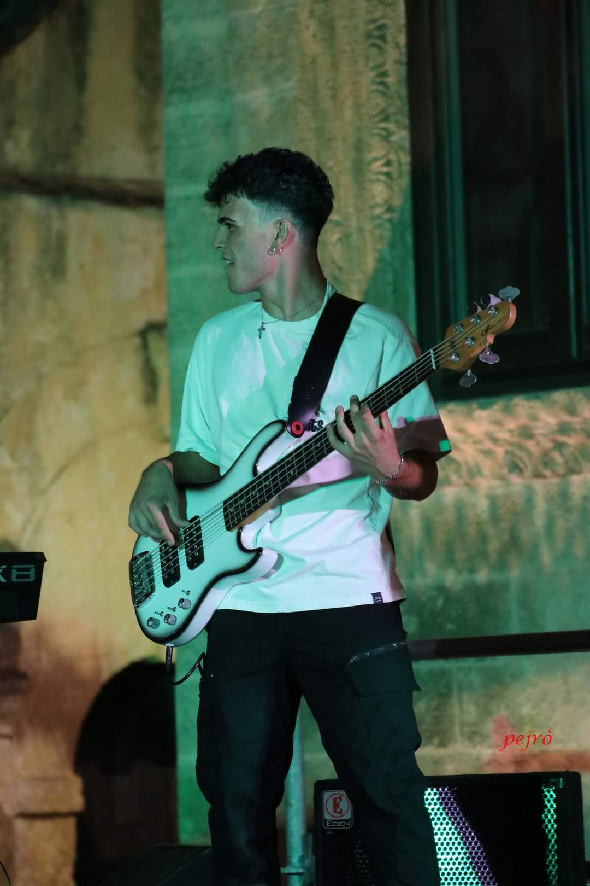
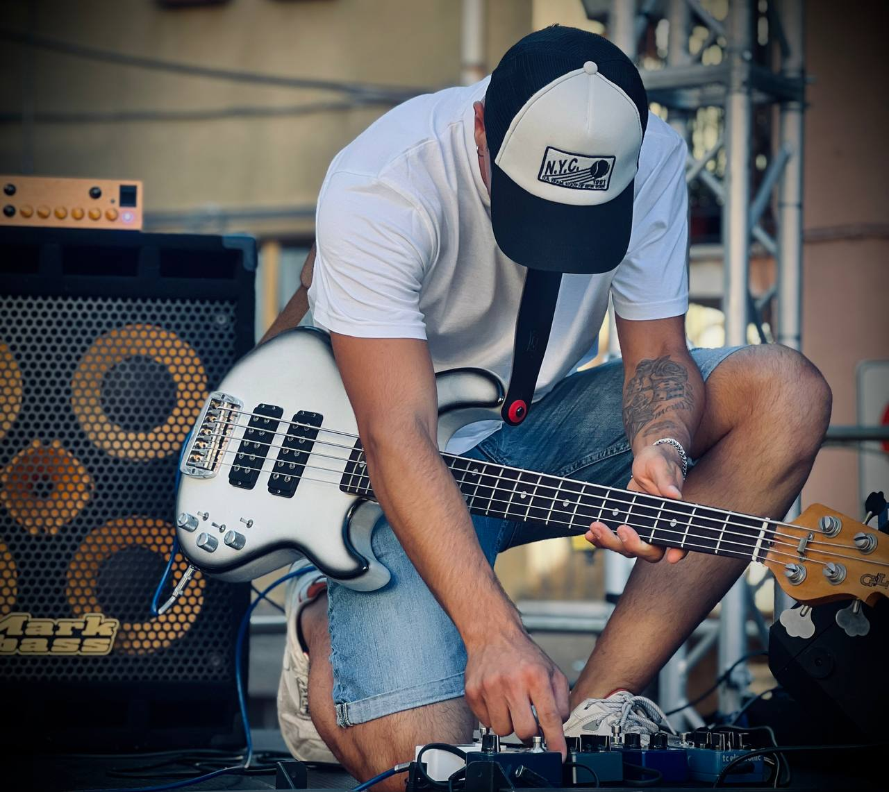
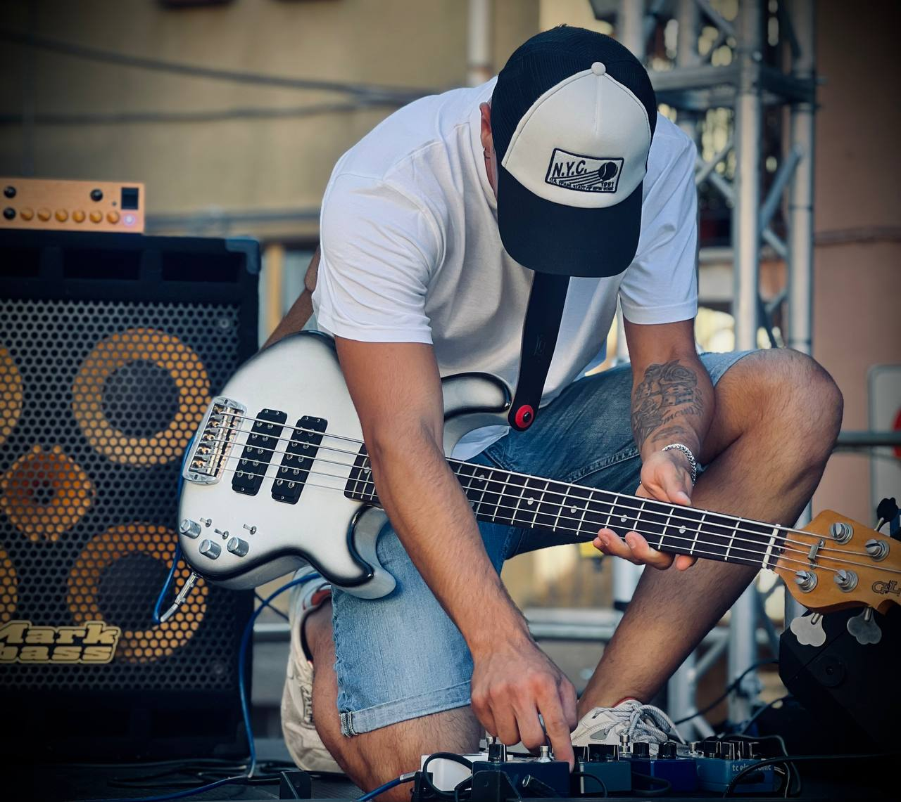

Marco Palumbo, Classe 2002. Affascinato dalla musica fin da piccolo, si innamora del basso durante la scuola media e decide di approfondire lo studio
prendendo lezioni di strumento sotto la guida del Maestro Valerio Bruno, in arte Combass, bassista/produttore degli Après La Classe e turnista di fama
nazionale e non. Con lui continua gli studi per 4 anni, analizzando tutte le sfaccettature dello strumento e trattando tutti i generi musicali: Pop, Rock,
Reggae, Jazz, Blues, Motown ecc.
Nel corso degli anni amplia le proprie conoscenze nell’ambito musicale e collabora con numerosi colleghi e formazioni artistiche.
Nel 2020 entra a far parte del Locomotive Jazz Festival, con il quale si esibisce in più occasioni, aprendo concerti a numerosi artisti come ad esempio
Simona Molinari. Ha la possibilità di viaggiare all’estero ed esibirsi in Francia, conoscere artisti ed ampliare il proprio bagaglio culturale.
Nel 2021 partecipa a Battiti Live, andato in onda su Italia1, come bassista di Tancredi. Nello stesso anno, entra a far parte dei Kamafei, gruppo salentino storico che vuole unire la musica popolare agli strumenti moderni. Con loro gira l’Italia esibendosi nelle piazze e partecipa alle annuali tappe del Festival La Notte della Taranta.
Entra a far parte dei MamaSka, gruppo ska/reggae/rocksteady, partecipa a Sanremo Rock 2021 esibendosi sul palco dell’Ariston, arrivano 2° su 12.000 band e ricevono il premio come miglior brano radiofonico. Lavora in studio in diverse occasioni. Incide per i MamaSka diverse linee di basso.
Nel 2022 partecipa alla presentazione del disco “Sarai Bellissima” di Imperfetto Prossimo, suonando sul palco dei Teatini (LE) in onore a Paolo Borsellino. Per Imperfetto Prossimo registra il basso in “Turbolenta Marea”, brano che riceve dalla FIMMG il premio “Mario Boni”, e in altri brani. Con la band di Imperfetto Prossimo, di cui fa parte, si esibisce aprendo il concerto al Teatro Apollo di Lecce a Franco Simone.
Nel 2023 forma i Joaniti, gruppo di ragazzi dall’anima funk/RnB, con i quali suona in numerosi locali ed ha la possibilità di conoscere e suonare con musicisti di livello come Mylious Johnson, batterista di fama internazionale (nella lista delle sue immense collaborazioni troviamo i nomi di P!nk, Destiny’s Child, Mariah Carey, Quincy Jones e artisti italiani come Giorgia, Jovanotti, Ultimo e tanti altri).
Prende il ruolo di bassista di Leo Gaballo, promettente ragazzo neretino, per il quale registra diversi brani e si esibisce in teatri e piazze.
Nel 2024 diventa bassista ufficiale dell’orchestra Li Ucci Festival, esibendosi in vari eventi itineranti e nel concertone finale.
Attualmente frequenta il Conservatorio “Nino Rota” di Monopoli e studia con il Maestro Mario Guarini, musicista con una carriera da invidiare e attuale bassista di Claudio Baglioni.
È in continuo sviluppo il suo impegno e lavoro con le numerose formazioni con cui collabora, da quelle inedite alle cover.
A fine 2024 registra il musical “Polo Nord”, con oltre venti brani, per Mind Production, che farà il giro di alcuni teatri/cinema italiani.
È attualmente a lavoro in studio per la creazione del disco 2025/2026 dei Kamafei.
Nel 2025 continua a farsi largo tra i musicisti locali facendosi notare da diversi artisti locali che lo coinvolgono nei propri progetti, come quello inedito di Frank Bramato.
Prende parte alla registrazione di “Paradiso Di Notte” della Sottoscritta, in cui è presente anche Mylious Johnson.
Oltre all’esperienza e alla carriera live, coltiva la crescita mediatica lavorando molto sui social. Così facendo, inizia a farsi notare da aziende che lo supportano collaborandoci insieme. Tra esse troviamo Moises, nota applicazione a livello mondiale.
Marco Palumbo, born in 2002. Fascinated by music since childhood, he fell in love with the bass guitar during middle school and decided to deepen his
studies by taking lessons under the guidance of Maestro Valerio Bruno, a.k.a. Combass, bassist/producer of Après La Classe and a renowned session musician.
He studied with him for 4 years, analyzing all aspects of the instrument and exploring all musical genres: Pop, Rock, Reggae, Jazz, Blues, Motown, etc.
Over the years, he expanded his musical knowledge and collaborated with numerous colleagues and artistic groups.
In 2020, he joined the Locomotive Jazz Festival, performing on several occasions and opening concerts for renowned artists such as Simona Molinari.
He also had the opportunity to travel abroad and perform in France, meet artists, and broaden his cultural horizons.
In 2021, he participated in Battiti Live, broadcast on Italia1, as Tancredi's bassist. That same year, he joined Kamafei, a historic Salento group that combines folk music with modern instruments. With them, he toured Italy, performing in the squares and participating in the annual stages of the Notte della Taranta Festival.
He joined MamaSka, a ska/reggae/rocksteady group, and participated in Sanremo Rock 2021, performing on the Ariston stage. They finished second out of 12,000 bands and received the award for best radio song. He worked in the studio on several occasions and recorded several bass lines for MamaSka.
In 2022, he participated in the presentation of Imperfetto Prossimo's album "Sarai Bellissima," playing on the Teatini stage (LE) in honor of Paolo Borsellino. For Imperfetto Prossimo, he recorded bass on "Turbolenta Marea," a song that received the "Mario Boni" award from the FIMMG, as well as on other tracks. With the Imperfetto Prossimo band, of which he is a member, he performed as the opening act for Franco Simone at the Teatro Apollo in Lecce.
In 2023, he formed Joaniti, a group of young people with a funk/R&B soul, with whom he played in numerous venues and had the opportunity to meet and play with top-notch musicians such as Mylious Johnson, the internationally renowned drummer (his extensive list of collaborations includes P!nk, Destiny's Child, Mariah Carey, Quincy Jones, and Italian artists such as Giorgia, Jovanotti, Ultimo, and many others).
He took over as bassist for Leo Gaballo, a promising young man from Nereto, for whom he recorded several songs and performed in theaters and squares.
In 2024, he became the official bassist of the Li Ucci Festival orchestra, performing at various touring events and in the final concert.
He currently attends the "Nino Rota" Conservatory in Monopoli and studies with Maestro Mario Guarini, a musician with an enviable career and Claudio Baglioni's current bassist.
His commitment and work with the numerous groups he collaborates with, from original songs to covers, is constantly evolving.
At the end of 2024, he recorded the musical "Polo Nord," with over twenty songs, for Mind Production, which will tour several Italian theaters and cinemas.
He is currently working in the studio on the 2025/2026 Kamafei album.
In 2025, he continued to make his mark among local musicians, attracting the attention of several local artists who involved him in their projects, such as Frank Bramato's unreleased track.
He took part in the recording of "Paradiso Di Notte" by the Undersigned, which also featured Mylious Johnson.
In addition to his experience and live career, he cultivated media growth by working extensively on social media. In doing so, he began to gain the attention of companies that supported him through collaborations. Among them was Moises, a world-renowned app.


 



 

 

 
